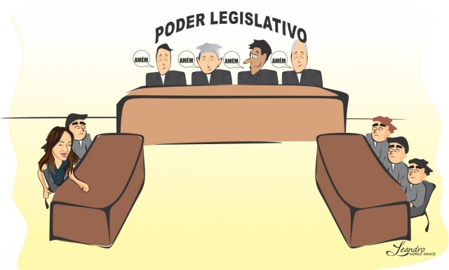

Poder Legislativo: Tem como função a elaboração de leis e a fiscalização dos atos do Poder Executivo. É formado por vereadores, deputados e senadores eleitos pela população.
1. Vereador: Ao vereador cabe elaborar, propor, discutir e aprovar as leis a serem aplicadas no município. Também é seu dever acompanhar as ações do Executivo – no caso, o prefeito, verificando se estão sendo cumpridas as metas de governo e se estão sendo atendidas as normas legais. Seu local de trabalho é a Câmara Municipal.
2. Deputado Estadual: O deputado estadual tem como principais funções legislar de acordo com os interesses da população do estado e fiscalizar o trabalho do Executivo – nesse caso, o governador.
3. Deputado Federal: cabe a ele propor, discutir e aprovar leis que podem alterar até mesmo a Constituição. É o deputado federal quem aprova ou não medidas provisórias propostas pelo presidente. Além disso, fiscaliza e controla as ações do Poder Executivo - o presidente, e para isso conta com o Tribunal de Contas da União (TCU), órgão responsável por avaliar a aplicação dos recursos públicos.
4. Senador: Uma de suas principais funções é criar, revisar e aprovar leis ou emendas à Constituição Federal. Senadores também fiscalizam e controlam as ações do Poder Executivo - no caso, o presidente. Além disso, integram as comissões do senado, que podem ser temporárias ou permanentes. Estes são os ambientes na casa legislativa em que se discutem problemas específicos – como economia, agricultura, segurança – e onde há um debate mais profundo em torno de projetos de lei, emendas constitucionais, etc.
Poder Executivo: tem a função de executar as leis já existentes e de implantar novas legislações segundo as necessidades do Estado e da população.
1. Prefeito: O prefeito é o chefe do poder executivo na esfera municipal, sendo o responsável por administrar os interesses da cidade em conjunto com a Câmara Municipal dos vereadores.
2. Governador: O governador representa o Estado nas suas relações jurídicas, políticas e administrativas. Ou seja, cabe a ele defender os interesses de seu estado junto ao presidente. Além disso, o governador possui diversas atribuições, com destaque para: comando das polícias militar e civil; gerir estradas, portos, aeroportos e transporte intermunicipal/interestadual; definir e alocar corretamente o orçamento para áreas como saúde, educação e outras.
3. Presidente: É o chefe do Poder Executivo e figura essencial dentro de nosso sistema político - o presidencialismo, pois exerce funções de grande importância como: planejar e executar políticas públicas, escolher ministros, sugerir, vetar ou sancionar projetos de lei aprovados pelo Legislativo, entre outras. Além disso, com o apoio de seus ministros, o presidente conduz a economia, a segurança nacional, a educação, a política externa e demais áreas fundamentais do país.
Poder Judiciário: sua principal função é resguardar a Constituição. Ou seja, não permitir que nenhuma outra lei, ou o próprio exercício do Legislativo ou do Executivo, contradiga os princípios constitucionais. O Poder Judiciário é dividido basicamente entre justiça comum, justiça do trabalho, justiça eleitoral e justiça militar. É o único poder cujos representantes não são escolhidos diretamente pela população, mas por outras formas de seleção. O Supremo Tribunal Federal (STF), por exemplo, é a mais alta instância do poder judiciário brasileiro seus ministros são escolhidos por nomeação presidencial.